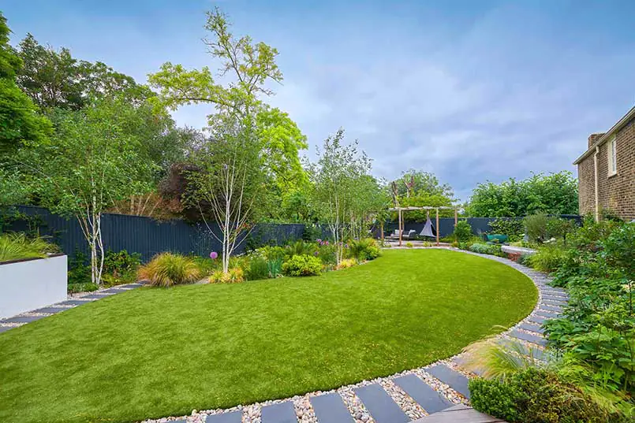
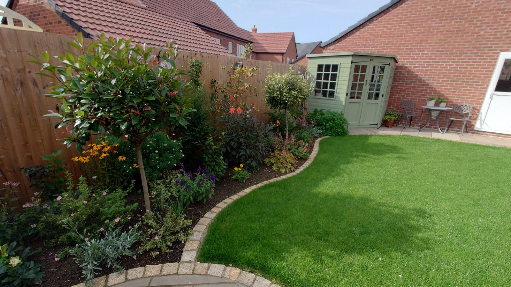
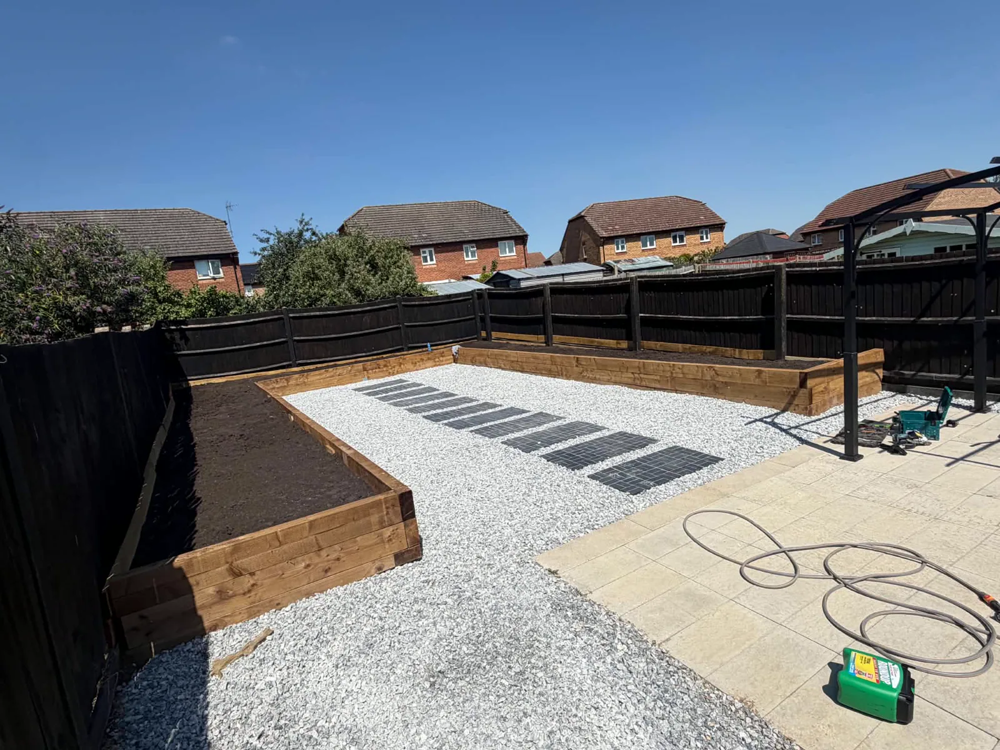
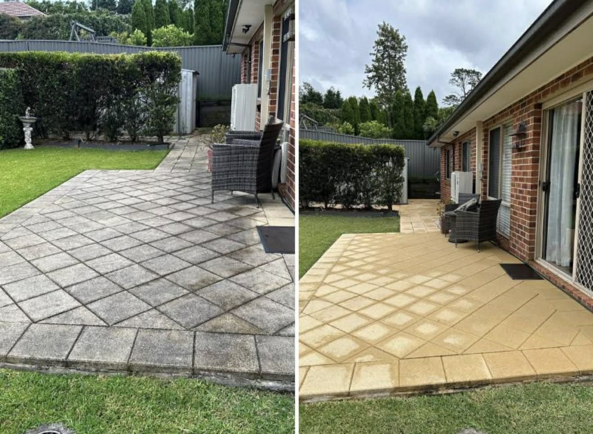

Tree lopping & tree removals
Discuss tree surgery, lopping or felling in the context of the tree and its surroundings. The approach needs to suit the individual job.
Tree lopping and removals, stump grinding and root removal, hedge cutting, pruning and hedge removal.
Email your enquiry ↗One-off jobs and larger projects — tell us what you need.

Choose the work you need help with. Call us if you have several jobs in mind.
Discuss tree surgery, lopping or felling in the context of the tree and its surroundings. The approach needs to suit the individual job.
Deal with what remains after earlier tree work. Explain the stump size, location, access and intended use of the space afterwards.
Maintain the outline of a hedge or discuss a change in size. Mention the length, height and which sides need attention.
Open up space or prepare for a different boundary. Discuss the complete removal scope, including roots and what will replace the hedge.
One job or a complete change — call for a free quote.
A hedge that needs its shape back, a tree that needs attention or a stump left from earlier work. Start with what is growing, where it stands and what you would like to change.
The size and condition of the tree or hedge, access, surrounding structures and handling of cut material affect the job. Stump grinding and root removal can be quoted as part of the discussion.
Discuss your job ↗Don’t have every detail? Give us a call and we’ll talk it through.
Yes. Stump grinding and root removal are offered. Tell us its approximate size and position, how it can be accessed and what you want to do with the area afterwards.
Yes. Explain whether you want a trim, pruning or full hedge removal. Agree the treatment of roots and removal of material as part of the scope.
No — make sure it is included in the agreed scope if you need it. County offers stump grinding and root removal, so you can discuss these alongside the tree work.
YOUR GARDEN. YOUR NEXT STEP.
You don’t need all the answers before getting in touch. A description of the job and your postcode are a good place to start.
07526 024115 Call for a free quote, or email the details and any photos below.countylandscaping77@gmail.comMore than one job in mind?
Tell us about the whole garden.

Lawn mowing, turf supplied and installed, garden clearances, patios and slabbing, and regular maintenance programmes.

Fencing installation and repairs, fence painting and treatment, brickwork and garden walls.

Pressure washing for driveways and patios, with the approach discussed around the surface and its condition.